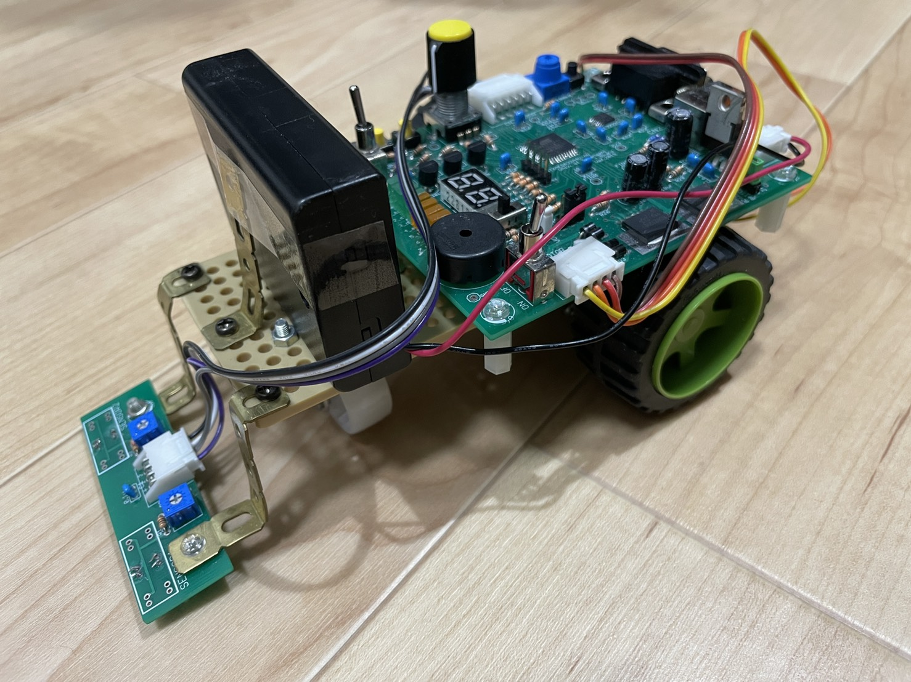
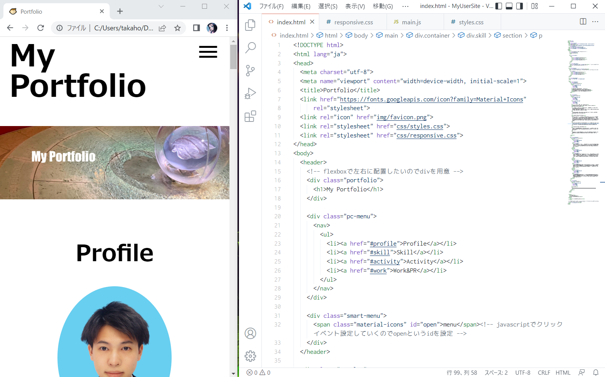

白い床に黒線で引かれたライン上をトレースして走るロボットで線の有無を検知する光センサとマイコン、移動用の車輪で構成されています。ロボットの動きはプログラミングで制御し、ライン上をトレースしながら走る機能に加えセンサが反応しているか確かめるLEDの搭載と音楽を鳴らしながら走る機能を追加しました。
担当役割
要件定義、基本設計、プログラミングの実装
制作期間
1ヶ月
機能
黒い線のライントレース、センサに反応したLEDライトの点灯、音楽機能の実装
キッカケ
大学で学んだ機械、電気、情報を活かし1つの作品を作り上げてみたいと感じたからです。
実際に動いている動画

HTML、CSS、JavaScriptを使ったWebサイト制作で自身のポートフォリオの作成を行いました。Webサイトをゼロから制作する過程からWebサイトを公開するところまでのスキルの証明としてご覧ください。
開発環境
ブラウザアプリケーション：Google Chrome
エディタアプリケーション：VS Code
Webサイト公開ツール：Github Pages
学習環境：ドットインストールというプログラミング学習サイト
制作期間
1週間
機能
ポートフォリオ、スキルの証明
キッカケ
自身の生活の一部であるWebページを作成することによってUI/UXデザイナー、コンテンツディレクター、エンジニアとしての一歩目として成長したかったからです。
デザインについて
シンプルなデザインではありますが、コントラスト、グルーピングを意識しデザインを考えました。
【コントラスト】伝えたいことを目立たせるため色、サイズ、フォントの形式などを意識しました。
【グルーピング】見ている方がWebページ全体を通して見やすい構造となるように各セクションの配置や、区切りの線を引きを意識しました。
実際に動いている動画
コーディングについて
基本的に各要素はdivタグを使いブロックレベル要素として位置の指定したり、指定した範囲にスタイルシートを適用を行いました。class属性を付けほかの要素との分別も行いました。サイトのレイアウトには主にフレックスボックスを使いました。また上の動画でもあるようにレスポンシブウェブデザインとJavaScriptを使い見ている方の端末に合うような、コーティングを行いました。